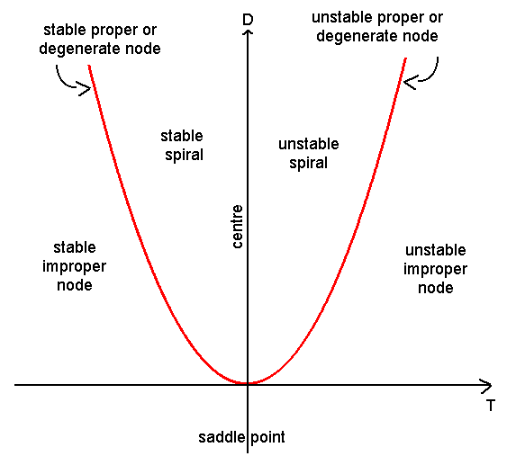
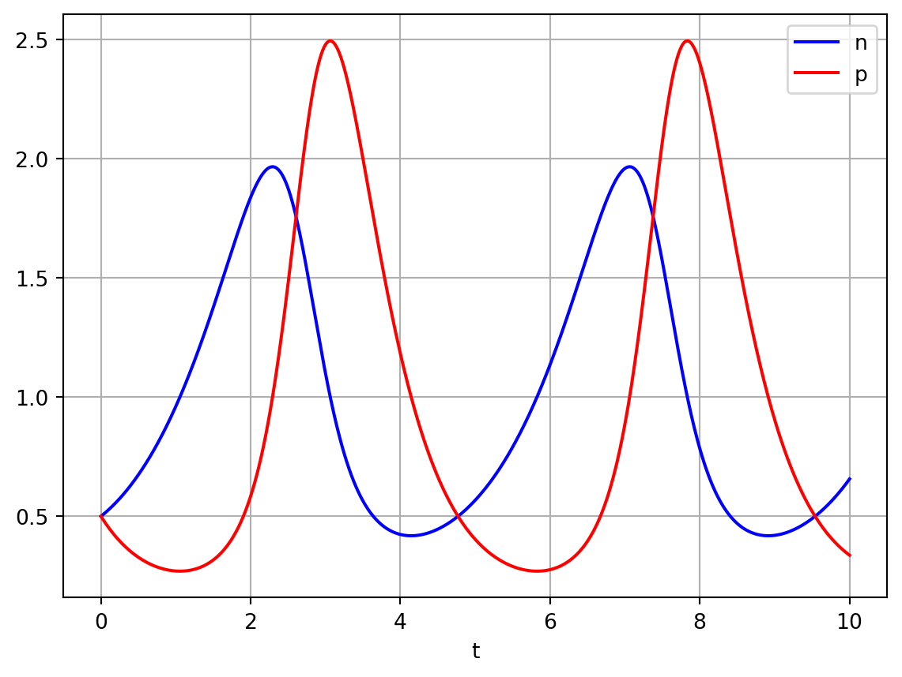

In this chapter we consider models of interacitng populations.
Let \(u=u(t)\) and \(v=v(t)\) represent populations of two different species at continuous time \(t\). Suppose that \(u(t)\) and \(v(t)\) satisfy the ordinary differential equations \[
\begin{aligned}
\frac{du}{dt}&=f(u,v), \nonumber \\
\frac{dv}{dt}&=g(u,v).
\end{aligned}
\tag{4.1}\]
In this section we will consider particular forms for \(f\) and \(g\) that represent different types of inter species interaction. Before considering particular examples, we develop some general techniques for analysing equations of the form Equation 4.1.
4.1 General tools
4.1.1 Steady states
\((u^*,v^*)\) is defined to be a steady state of Equation 4.1 if
\[
f(u^*,v^*)=g(u^*,v^*)=0.
\]
Hence, by definition, the time derivatives of \(u(t)\) and \(v(t)\) are both zero at \((u^*,v^*)\). As was the case for single species models, steady states are obtained by solving algebraic equations.
4.1.2 Linear stability analysis
Suppose that \((u^*,v^*)\) is a steady state of equations Equation 4.1.
We consider a change of dependent variables such that
Upon making the assumption that the perturbations about the steady state are small, the leading order terms are linear and higher order terms are neglected. Defining
The linear system arrived upon in Equation 4.4 was encountered previously in Differential Equations (MA31002). We summarise the important results here. Seeking a solution of Equation 4.4 of the form
\[
\mathbf{w}=\mathbf{v}e^{\lambda t}
\]
one obtains the characteristic equation
\[
\lambda^2 -\lambda \mathrm{tr}(A)+\det(A)=0,
\] which has solutions
Whilst a complete classification of the linear stability of a steady state can be obtained by explicitly calculating the eigenvalues, in many cases it is sufficient to deduce whether or not a steady state is stable or unstable. This can be achieved by calculating the determinant and trace of the Jacobian matrix (\(\det(A)\) and \(\mathrm{tr}(A)\), respectively) and referring to Figure 4.1.

Figure 4.1: Stability in the trace detemrinant plane.
The different cases can be categorised as follows:
\(\det(A)<0\) There is one positive and one negative real eigenvalue. Hence the steady state is a saddle which is unstable.
\(\det(A)>0\) The steady state can be either stable or unstable, depending on \(\mathrm{tr}(A)\) (and the real part of the eigenvalues).
If \(\mathrm{tr}(A)>0\), the steady state is unstable.
If \(\mathrm{tr}(A)^2>4 \det(A)\), it is an unstable node.
If \(\mathrm{tr}(A)^2<4 \det(A)\) it is an unstable spiral.
If \(\mathrm{tr}(A)<0\), the steady state is stable.
If \(\mathrm{tr}(A)^2>4 \det(A)\), it is an stable node.
If \(\mathrm{tr}(A)^2<4 \det(A)\), it is an stable spiral.
These different cases can be distinguished in the trace-determinant plane plotted in Figure 4.1.
Note that it can be shown rigorously that the linear stability of the nonlinear system is equivalent to that of the linearised system in all cases except when the steady state is a centre. In this case, nonlinear stability analysis is required to determine the stability of the nonlinear system.
The condition\(\det(A)>0\) excludes the case that the eigenvalues are real but have opposite signs (i.e. it cannot be a saddle point).
The condition \(\mathrm{tr}(A)>0\) implies that the real part of both eigenvalues are positive (i.e. the steady state is unstable).
The condition \(\mathrm{tr}(A)^2<4 \det(A)\) implies that the eigenvalue are complex. Hence \[
\lambda_{\pm}=\mu\pm i\omega \ \ \
\] and the solution of the system can be written \[
e^{\lambda t} = e^{(\mu+i\omega) t} = e^{\mu t}e^{i\omega t}.
\] Thus the magnitude of perturbation grows but it oscillates about the steady state. Hence the steady state is an unstable spiral.
4.1.3 Nullclines
Nullclines of the equations Equation 4.1 are given by the curves \[
f(u,v)=0
\] and \[
g(u,v)=0,
\] respectively. Note that steady states arise at the intersection of nullclines.
Using the \(u\) nullclines we identify domains of the phase plane where \(du/dt >0\) and \(du/dt <0\).
Similarly, using the \(v\) nullcline we identify domains of the phase plane where \(dv/dt >0\) and \(dv/dt <0\).
The nullclines can be used to help identify confined sets and hence apply the Poincaire-Bendixson theorem.
4.1.4 Poincaire-Bendixson theorem
Suppose that the system of equations \[
\frac{du}{dt}=f(u,v), \ \ \ \ \frac{dv}{dt}=g(u,v)
\tag{4.5}\] possesses a confined set (i.e. a bounded domain in the phase plane upon which the derivative field points into the domain) that contains an unstable node or spiral. Any trajectory cannot leave the confined set, nor can it tend to the unstable steady state. The Poincaire-Bendixson theorem states that as \(t\rightarrow \infty\), the trajectory will tend towards a limit cycle.
4.1.5 Dulac criterion
Suppose \(D\) is a simply connected region in the plane and that there exists a function \(B(x,y)\), continuously differentiable on \(D\), such that the expression \[
\frac{\partial }{\partial u} (Bf) + \frac{\partial }{\partial v} (Bg)
\] is not identically zero and does not change sign in D. Then there are no closed orbits in \(D\).
4.2 The Lotka-Voltera model
Suppose that \(N(t)\) and \(P(t)\) represent the prey and predator population densities at time \(t\), respectively. Consider a model of the form \[
\begin{aligned}
\frac{dN }{dt} &= aN -bNP, \nonumber \\
\frac{dP }{dt} &= cNP -dP,
\end{aligned}
\] where \(a\), \(b\), \(c\) and \(d\) are positive constants.
where \(\alpha=d/a\). Note that all variables and parameter are without dimensions.
4.2.2 Numerical solutions
Code
import numpy as npimport matplotlib.pyplot as pltimport scipyfrom scipy.integrate import odeintalpha=1.5def rhs_lv_model(x,t): rhs=np.zeros_like(x) n=x[0] p=x[1] dn_dt=n*(1-p) dp_dt=alpha*p*(n-1) rhs[0]=dn_dt rhs[1]=dp_dtreturn rhst = np.linspace(0, 10, 1000)init_cond=[0.5,0.5]alpha=2.0sol1 = odeint(rhs_lv_model, init_cond,t)n=sol1[:,0]p=sol1[:,1]plt.plot(t, n, 'b',t,p,'r')plt.legend(['n','p'],loc='best')plt.xlabel('t')plt.grid()plt.show()

Figure 4.2: Numerical solution of Lotka-Volterra model
4.2.3 Steady states
The steady-states of equation Equation 4.6 are identified by seeking solutions of
\[
f(n^*,p^*)=g(n^*,p^*)=0.
\]
Hence
\[
n^*(1-p^*)= 0 \ \ \ \ \ \alpha p^*(n^*-1).
\]
The first of these equations has solutions either
\[
n^*=0 \ \ \ \textrm{or} \ \ \ p^* =1.
\]
Substituting for \(n^*=0\) in the second equation yields \(p^*=0\). Hence one steady state is \((0,0)\). Substituting for \(p^*=1\) in the second equation yields \(n^*=1\). Hence a second steady state is (1,1).
4.2.4 Linear stability
The linear stability of the steady states is described by the Jacobian matrix \[
A=\left(\begin{array}{rr}
\frac{\partial f}{\partial n}&\frac{\partial f}{\partial p} \\ \frac{\partial g}{\partial n}&\frac{\partial g}{\partial p} \end{array}\right)_{(n^*,p^*)} = \left(\begin{array}{rr}
1-p&-n \\ \alpha p &\alpha (n-1) \end{array}\right)_{(n^*,p^*)}
\]
Hence the eigenvalues of \(A\) are \(1\) and \(-\alpha\). As \(\alpha>0\) the origin is a saddle. The eigenvectors are \([1, 0]\) and $[0,1]. $
At (1,1) \[
A=\left(\begin{array}{rr} 0&-1 \\ \alpha &0 \end{array}\right),
\]
and the eigenvalues are \(\pm i\sqrt{\alpha}\). Therefore the steady state at (1,1) is a centre.
4.2.5 Solutions in the phase plane
See Figure 4.3 for solution trajectories plotted in the phase plane using different initial conditions. Note the expected saddle like behaviour when trajectories that are close to the origin. Furthermore, note that the different initial conditions result in distinct closed loops and that the inner-most loop, i.e. that closest to the steady-state (1,1), behaves like a centre, as expected given the linear stability analysis. However, far from the steady-state the solution trajectory deviates from the linearised model.
where \(H\) is a conserved quantity that this is determined by the initial conditions. As the equations take conservative form, the Lotka-Voltera model is said to be structurally unstable, as a small perturbation to the solution at a given point in the oscillatory cycle can result in large changes elsewhere in the cycle. For example, suppose the outermost limit cycle in Figure 4.3 is perturbed by a small amount at the point (1,0.1) onto its nearest limit cycle. Later in the cycle these two trajectories deviate by a large amount.
4.3 Competition
In models of competition, two or more species compete for the same resource or in some way inhibit each other’s growth. Letting \(N_1(t)\) and \(N_2(t)\) represent the population density of two species, we consider the ODEs \[
\begin{aligned}
\frac{d N_1}{dt} &= r_1N_1\left(1-\frac{N_1}{K_1}-b_{12}\frac{N_2}{K_1}\right), \nonumber \\
\frac{d N_2}{dt} &= r_2N_2\left(1-\frac{N_2}{K_2}-b_{21}\frac{N_1}{K_2}\right),
\end{aligned}
\] where \(r_1\), \(r_2\), \(K_1\) and \(K_2\) are positive constants. As before, the \(r's\) are linear growth rates and the \(K\)’s are carrying capacities. The parameters \(b_{12}\) and \(b_{21}\) measure the competitive effect of \(N_2\) on \(N_1\) and \(N_1\) on \(N_2\), respectively.
4.3.1 Nondimensionalisation
After nondimensionalising using the change of variables
The steady states of Equation 4.7 are identified in the usual manner, i.e. by seeking \(({n_1}^*,{n_2}^*)\) such that
\[
f({n_1}^*,{n_2}^*)=g({n_1}^*,{n_2}^*)=0.
\]
The steady state equations are \[
{n_1}^*\left(1- {n_1}^*-a_{12}{n_2}^*\right)=0 \ \ \ \ {n_2}^*\left(1-{n_2}^*-a_{21}{n_1}^*\right)=0.
\] The first equation has solution \[
n_1^*=0
\] or \[
\left(1- {n_1}^*-a_{12}{n_2}^*\right) \implies n_2=\frac{1}{a_{12}}(1-n_1^*).
\] Consider \(n_1^*=0\). Substitution in the second equation yields \[
{n_2}^*\left(1-{n_2}^*\right)=0.
\] Hence either \(n_2^*=0\) or \(n_2^*=1\). Hence two steady states are \((0,0)\) and \((0,1).\) \ Now consider \(n_2^*=\frac{1}{a_{12}}(1-n_1^*)\) with \(n_1^*\neq0\). \ Substitution in the second steady state equation yields \[
\frac{1}{a_{12}}(1-n_1^*) \left(1- \frac{1}{a_{12}}(1-n_1^*) -a_{21}{n_1}^*\right)
\] Hence either \(n_1^*=1\) or \[
\left(1- \frac{1}{a_{12}}(1-n_1^*) -a_{21}{n_1}^*\right)=0 \implies n_1^*=\frac{1-a_{12}}{1-a_{12}a_{21}}.
\] In the case where \(n_1^*=1\), we find that \(n_2^*=0\). Hence the steady state is (1,0).
In the case where \[
n_1^*=\frac{1-a_{12}}{1-a_{12}a_{21}}
\] we find that \[
n_2^*=\frac{1-a_{21}}{1-a_{12}a_{21}}
\] Hence the steady state is \[
\left(\frac{1-a_{12}}{1-a_{12}a_{21}},\frac{1-a_{21}}{1-a_{12}a_{21}}\right).
\]
4.3.3 Nullclines
The nullclines for Equation 4.7 are straight lines given by
\[
n_1=0 \ \ \ \ \ n_2=\frac{1-n_1}{a_{12}},
\]
and
\[
n_2=0 \ \ \ \ \ n_2= 1-a_{21}n_1.
\]
Note that the steady states \((0,0)\), \((1,0)\) and \((0,1)\) are always biologically relevant (i.e. independently of the parameter values for \(a_{12}\) and \(a_{21}\)).
However, the coexistence steady state is only biologically relevant if the nullclines intersect in the positive quadrant and this occurs only in certain regions of the model’s parameter space.
In the cases where \(a_{12},a_{21}<1\) and \(a_{12},a_{21}>1\) there is a coexistence steady state (i.e. the nullclines intersect in the positive quadrant).
However, if \(a_{21}<1\) and \(a_{12}>1\) or \(a_{12}<1\) and \(a_{21}>1\) there is not a biologically relevant, coexistence steady state (i.e. the nullclines do not intersect in the positive quadrant).
Hence there are are four qualitatively different types of solution to consider.
4.3.4 Linear stability
The linear stability of the different steady states is determined by calculating the Jacobian matrix
Hence the eigenvalues of the Jacobian are \(1\) and \(\rho\). As \(\rho>0\), the origin is therefore an unstable node (there are two real positive eigenvalues).
Hence if \(a_{21}<1\), \(\det{A}<0\) and (1,0) is a saddle point and thus unstable (see Figure 4.1).
If \(a_{21}>1\), \(\det{A}>0\) and \(\mathrm{tr}{A}<0\). Hence (1,0) is a stable node.
Hence the parameter \(a_{21}\), which describes how strongly Population 1 inhibits the growth rate of Population 2, determines whether or not the steady state representing extinction of Population 2 but not Population 1 is stable or not.
In this case if \(a_{12}<1\), \(\det{A}<0\) and (0,1) is a saddle point. If \(a_{12}>1\), \(\det{A}>0\) and \(\mathrm{tr}{A}<0\) and (0,1) is a stable node. Hence the parameter \(a_{12}\), which describes how strongly Population 2 inhibits the growth rate of Population 1, determines whether or not the steady state representing extinction of Population 1 but not Population 2 is stable or not.
At the coexistence steady state, recall the steady state is
\[
\left(\frac{1-a_{12}}{1-a_{12}a_{21}},\frac{1-a_{21}}{1-a_{12}a_{21}}\right).
\] Note that this steady state is only biologically relevant in the cases \(a_{21}<1, a_{12}<1\) or \(a_{21}>1, a_{12}>1\). Evaluating the Jacobian yields \[
A=\frac{1}{1-a_{12}a_{21}}\left(\begin{array}{rr}
a_{12}-1 & -a_{12}(1-a_{12})\\ -\rho a_{21}(1-a_{21}) &\rho(a_{21}-1)\end{array}\right).
\]
The determinant and trace of the Jacobian are given by
Let’s firstly consider the case where \(a_{21}<1\) and \(a_{21}<1\). This implies that \(a_{21}-1<0\) and \(a_{12}-1<0\), hence evaluating the signs of the different products yields
Therefore the coexistence steady state is a stable node or spiral.
In the case where \(a_{21}>1\) and $a_{12}>1
\[
\det{A} = \rho(+)(+)(-)<0 .
\]
Hence the coexistence steady state is a saddle.
4.3.5 Phase portrait
See Figure 4.5 for phase portraits of three of the four cases that we have considered. It is expected that you can sketch phase portraits. Key details to consider are the steady states and their linear stability. You should also sketch the nullclines and depict the sign of the derivatives in the phase plane on either side of the nullclines. You should also sketch one or more sample trajectories.
Figure 4.5: Numerical solution of the competition model
4.3.6 Insight
The model therefore has four qualitatively different behaviours that are described as follows: Consider the case where \(a_{21}>1\). This represents the case of Population 1 strongly competing with Population 2.
If \(a_{12}>1\), Population 2 also strongly competes with Population 1. In this case, there are four biologically relevant steady states, two of which are stable (1,0) and (0,1). The coexistence steady state is a saddle and thus unstable. The model is bistable and the initial conditions determine whether solutions end up at (1,0) or (0,1) (see Figure 4.5). The biological interpretation of this solution is that one species will always win and completely outcompete the other. Even if the two populations are equal (\(K_1=K_2\) and \(a_{21}=a_{12}>1\)), one species will always win and the other will become extinct.
If \(a_{12}<1\), Population 2 weakly competes with Population 1. There is no coexistence steady state and the only stable steady state is (1,0). Hence Population 1 always wins and Population 2 always becomes extinct.
Now consider the case where \(a_{21}<1\). This represents the case of Population 1 weakly competing with Population 2.
If \(a_{12}>1\), Population 2 strongly competes with Population 1. There is nonexistence steady state and the only stable steady state is (0,1). Hence Population 2 always wins and Population 1 always becomes extinct.
If \(a_{12}<1\), Population 2 also weakly competes with Population 1. The coexistence steady state is stable and the steady states (1,0) and (0,1) are unstable.
4.4 Symbiosis/Mutualism
When the interactions between two species results in mutually benefit, it is known as mutualism or symbiosis. To study this behaviour, we consider a model of the form \[
\begin{aligned}
\frac{d N_1}{dt} &= r_1N_1\left(1-\frac{N_1}{K_1}+b_{12}\frac{N_2}{K_1}\right), \nonumber \\
\frac{d N_2}{dt} &= r_2N_2\left(1-\frac{N_2}{K_2}+b_{21}\frac{N_1}{K_2}\right).
\end{aligned}
\] Note the only difference with the competition model is that the sign of the interaction term has changed. Hence we will not work through all the details as the analysis is the same as before.
4.4.1 Nondimensionalisation
Using the same nondimensionalisation as the competition model, we obtain the nondimensional equations \[\begin{aligned}
\frac{d n_1}{d\tau} &= n_1(1- n_1+a_{12}n_2) = f(n_1,n_2), \nonumber \\
\frac{d n_2}{d\tau} &= \rho n_2(1-n_2+a_{21}n_1) =g(n_1,n_2).
\end{aligned}
\tag{4.8}\]
4.4.2 Steady states
This model has steady-states \((0,0)\), \((1,0)\),\((0,1)\) and \[
\left({n_1}^*,{n_2}^*\right)=\left(\frac{1+a_{12}}{1-a_{12}a_{21}},\frac{1+a_{21}}{1-a_{12}a_{21}}\right).
\] The coexistence steady state is biological relevant if \(a_{12}a_{21}<1\)
4.4.3 Nullclines
The \(n_1\) nullclines satisfy \[
n_1=0, \ \ \ n_2=\frac{1}{a_{12}}(n_1-1).
\] The \(n_2\) nullclines satisfy \[
n_2=0, \ \ \ n_2=1+a_{21}n_1.
\] Note that both nullclines have a positive slope.
4.4.4 Linear stability
Using a similar analysis to the competition model, it can be shown that the steady states (0,0), (1,0) and (0,1) are unstable. When \(a_{12}a_{21}<1\) there is a stable coexistence steady state. See Figure 4.6.
Figure 4.6: Numerical solution of the symbiosis model
4.4.5 Insight
The important parameter in the model is the product \(a_{12}a_{21}\). This quantifies the total amount of cooperativity in the model. All steady states that involve the extinction of a species are unstable. In the case where if \(a_{12}a_{21}<1\) there is a stable steady state. Note that steady states of both variables are higher than they would be in the absence of the other species. In the \(a_{12}a_{21}>1\) there is no coexistence steady state and both populations grow in an unbounded manner.